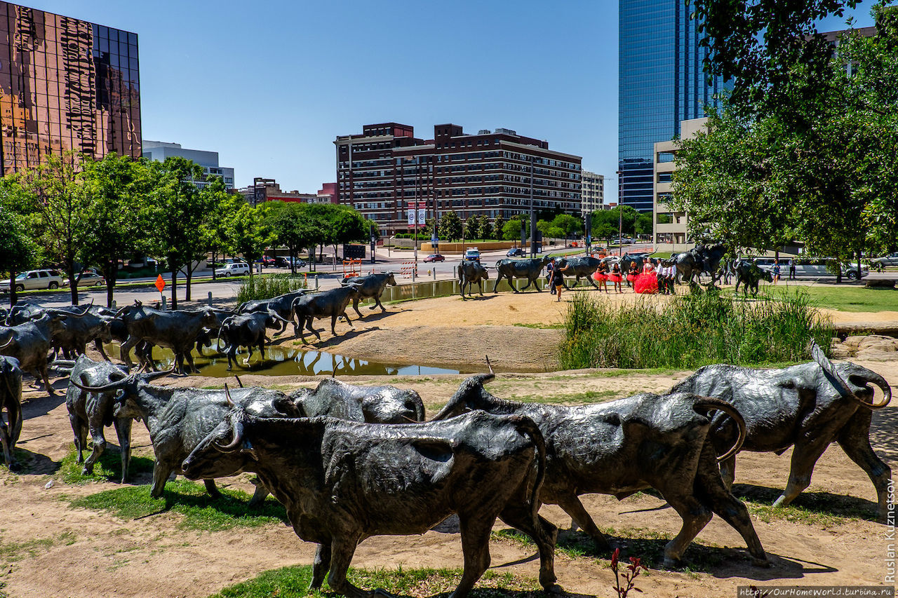
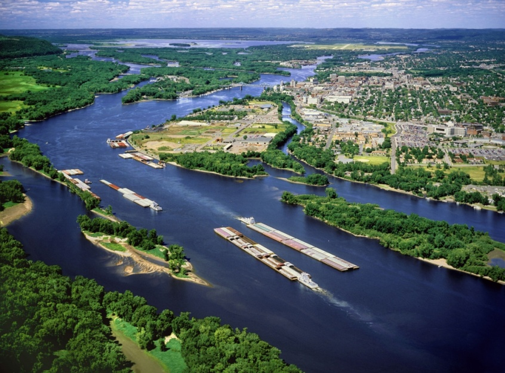

А сейчас рассмотрим топ тёплых штатов США, ведь все мы любим погреться на солнышке на берегу океана.
1. Гавайи.
Гавайские острова - жемчужина Соединенных штатов. Они образуют архипелаг в Тихом океане, почти полностью образующий одноименный штат США, расположенный на северо-восточной окраине Полинезии.
Теплый тропический климат, протяженная береговая линия, пышные тропические леса, водопады, текущие через каньоны бурные реки и действующие вулканы превратили острова в популярное место поездок туристов, серфингистов, биологов и вулканологов. И, конечно же, пляжи - золотые, красные, черные и даже зеленые, обласканные бесконечным прибоем. Глядя на все это великолепие, начинаешь понимать, почему американцы называют Гавайи «штат Алоха», что означает «счастье», «любовь».
Гавайи - это также отличные условия для серфинга и действующие вулканы, извергающие потоки лавы, притягивают к себе туристов со всего мира.
2. Техас.
Техас — самый южный штат США и один из самых колоритных во всей стране. Почти для всех путешественников он известен горячим нравом Дикого Запада, ковбоями, ранчо и вестернами.
Штат, в котором можно не только отдохнуть на горячих пляжах Мексиканского залива, но и вдоволь попутешествовать по прекрасным городам — солнечным, приветливым и пропитанным неукротимым духом Дикого Запада. В Техасе, как ни в одном другом штате, сохранились ковбойские традиции и любовь к безграничной свободе.
Главное богатство Техаса — его история. На территории штата расположено более 13 000 памятников, ставших государственным достоянием. Местные жители гордятся своей родиной, поэтому здесь так много музеев, которые рассказывают о жизни и становлении Техаса, его традициях, поражениях и победах. Ну и конечно же, не стоит забывать об уникальных природных достопримечательностях, которыми так богат этот регион.
3. Миссисипи.
Штат Миссисипи находится на землях, принадлежащих индейским племенам, которые населяли этот регион около тысячи лет назад, пока сюда не пришли европейцы. Согласно проведенным исследованиям, уровень развития местных племен был достаточно высокий. Именно они были создателями курганов, занимались земледелием, выращивали скот. У них была особая «миссисипская» культура, в основе которой было строительство сооружений и культурных зданий на возвышенностях (высоких курганов, срезанных сверху).
------------------------------------------------------------------------------------------------------------------------------
[ッПродолжение на следующей странице->]